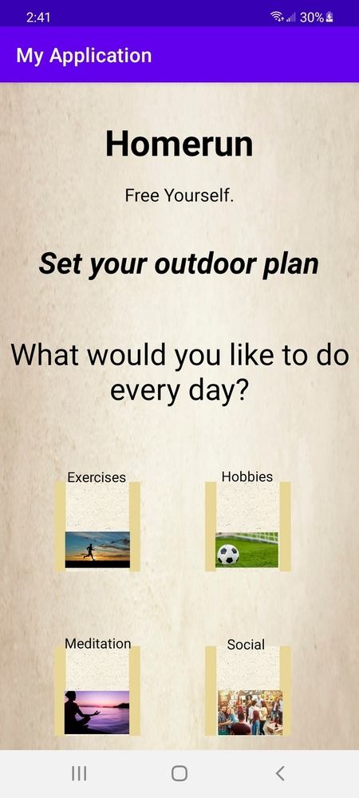

Homerun Outdoor App
Done Using Java and XML
Done Using Java and XML
This mobile application was done independently for a human-computer interaction course during the final semester of my time attending SFSU. Though this was simply a small, "theoretical" mobile app that served very much like a UI design interface, I feel this still had some good use for my own experience and my overall knowledge regarding how mobile apps today are being developed: by first creating a UI interface, and then using this sketch to do some actual coding, knowing what the blueprints for the mobile application would look like. As a matter of fact, this project has helped me significantly with creating my second mobile application, Charm (displayed as my third piece of work).
When creating this mobile application, I used Java and XML to be able to compile everything together. The Java was used to give the capability for the user to be able to click on buttons and to go to a specific page after one was clicked, where the XML was used very much like CSS: to add the design, colors, font styles, and background to each page.
As mentioned, though this mobile app was simply a theoretical "click-on-the-button-for-the-next- page" type of small project with no actual backend, its "purpose" once it was finished was to grant the user a random task per day to do an outdoor activity. Once the user first enters the app, he/she will select a specific outdoor category: to do something that relates to doing exercises, doing hobbies, doing meditative tasks outside, or to simply socialize. Once the user selects a category out of the four, he/she will assign themselves a number of days to do the routine. If the user, in any way, is incapable of completing the given outdoor activity, he/she has the options to either be granted a new activity of that same category, or to choose a different category (this will cause for the user to lose all of his/her progress). The user is free to view their lifetime statistics since they have downloaded the app, or to simply exit the application.